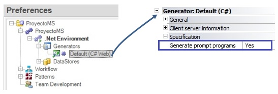

| Allows generating or removing the references to automatic selection programs.
| No | Removes the references to the Prompts associated with the Transaction. The first time the Transaction is specified with this option, the Prompts are not created. Otherwise, the Prompts are not removed, only the references to them are removed. | | Yes | Creates the Prompts associated with the Transaction being specified and the references to them in the internal logic of this transaction. This is the default value. |
Platforms: Web(.Net, Java), Smart Devices(Android, IOS)

To apply the corresponding changes when the property value is configured, execute a Rebuild All. |
|